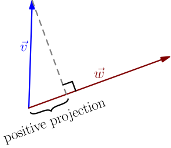
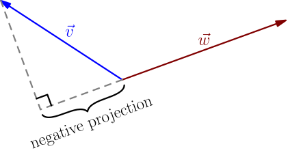
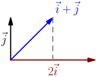
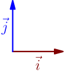
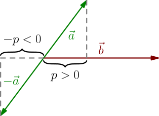
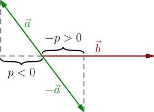
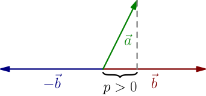
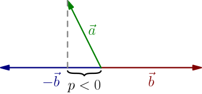
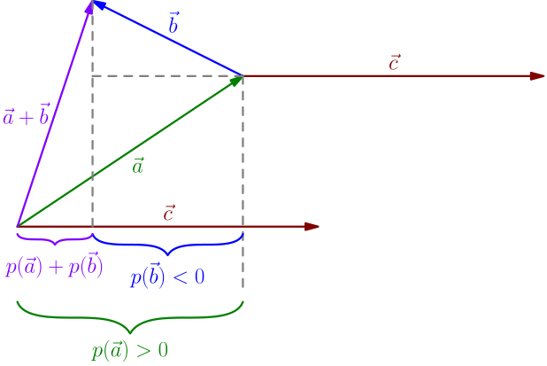
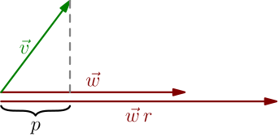

Dot Product with Projection¶
On this page, I'll introduce the dot product to you. It is an operation that takes in any two 2D vectors $\vec v$ and $\vec w$, and results in a number, denoted $\vec v \cdot \vec w$. Dot product is called dot product, because it's written with the multiplication dot, like $\vec v \cdot \vec w$, and it behaves like multiplication of numbers in some ways (more about this soon).
Rest of this page explains one way to think about what that number is, and I'll show many other ways in other dot product derivations. Of course, I'll also show you how all these ways are connected to each other. Each of the different ways has its own strenghts and weaknesses, and the true power of dot products lies in combining these different ways, as we'll see. When writing this site, I needed to choose one of these ways to start with, and I chose what's on this page.
Defining dot product¶
To tell you what number comes out of the dot product $\vec v \cdot \vec w$, I'll first tell about projection. Let's draw $\vec v$ and $\vec w$ so that their "beginnings" are in the same place. Then we draw a line from the tip of $\vec v$ to $\vec w$ perpendicularly, like this:

The projection is then the distance from the "beginnings" of the vectors to where this line touches $\vec w$. In the above picture, the projection is positive, but if you need to "extend" $\vec v$ for drawing the line, then the projection is negative:

Here's an animation showing this.
The dot product is not quite the projection; it's the projection multiplied by the length of the vector being projected onto. This is the first way to think about dot product.
Let $p$ be the projection of $\vec v$ onto $\vec w$. Then $\vec v \cdot \vec w = p\abs{\vec w}$.
Notice that this was not a formula derivation; it's a definition, because I'm telling you what dot product is, not deriving some result about how it behaves.
Examples:
- The projection of $\vec0$ onto any vector $\vec w$ is $0$, so we have $\vec0 \cdot \vec w = 0\abs{\vec w} = 0$.
- This also works the other way, $\vec w \cdot \vec0 = 0$. It's not at all clear what the projection of something onto $\vec0$ should be, but it doesn't matter, because that projection gets multiplied by $\abs{\vec 0} = 0$ anyway.
-
The projection of $\vec i+\vec j$ onto $2\vec i$ is $1$, so $(\vec i + \vec j) \cdot (2\vec i) = 1\abs{2\vec i} = 2$.

- The projection of any vector onto itself is simply the length of the vector, so $\vec v \cdot \vec v = \abs{\vec v} \abs{\vec v} = \abs{\vec v}^2$, where the first $\abs{\vec v}$ is the projection, and the second $\abs{\vec v}$ is the length of the $\vec v$ being projected onto.
-
The projection of $\vec j$ onto $\vec i$ is zero, so $\vec j \cdot \vec i = 0$.

You might be wondering how to calculate something like the projection of $2\I+3\J$ onto $4\I+5\J$. It's easiest to first calculate the dot product of these vectors, using a handy way to calculate dot products that I'll show soon. Then you know everything in $\vec v \cdot \vec w = p\abs{\vec w}$ except $p$, and you can solve the projection $p$.
Perpendicularness¶
In the last example above, notice that dot product of two nonzero vectors can be zero! This is different from the product of numbers. In fact, if $\vec v$ and $\vec w$ are nonzero and perpendicular, then the projection of $\vec v$ onto $\vec w$ is zero, and so $\vec v \cdot \vec w = 0\abs{\vec w} = 0$. If the vectors are nonzero and not perpendicular, then the projection is nonzero, and the dot product is also nonzero: $$ \vec v \cdot \vec w = (\underbrace{\text{projection}}_{\ne 0}) \underbrace{\abs{\vec w}}_{\ne 0} \ne 0 $$
The dot product of two nonzero vectors is zero if and only if the vectors are perpendicular.
Many books say that the zero vector is perpendicular to any vector, because that makes the above result work for all vectors, not just for nonzero vectors. I won't use that convention in these derivations, but you will likely see it elsewhere.
Minus signs¶
Let $\vec a$ and $\vec b$ be nonzero and non-perpendicular vectors, and let $p$ be the projection of $\vec a$ onto $\vec b$. Then the projection of $-\vec a$ onto $\vec b$ is $-p$, because it has the same absolute value as $p$, but with the opposite sign; it's positive when $p$ is negative, and negative when $p$ is positive.


Because the projection of $-\vec a$ onto $\vec b$ is $-p$, we get $$ (-\vec a) \cdot \vec b = -p\abs{\vec b} = -(\vec a \cdot \vec b). $$ This means that you can move a minus sign from $-\vec a$ to front of the dot product $\vec a \cdot \vec b$.
Above we had a minus sign in front of $\vec a$, and now we consider what happens if it's in front of $\vec b$. Just like before, $p$ denotes the projection of $\vec a$ onto $\vec b$. If $p > 0$, then $\vec b$ doesn't have to be "extended" for calculating the projection onto $\vec b$, but extending is needed for projection onto $-\vec b$.

If $p < 0$, then it's the opposite: extending is needed for projection onto $\vec b$ but not for projection onto $-\vec b$.

In both cases, the projection of $\vec a$ onto $-\vec b$ is $-p$, and we get $$ \vec a \cdot (-\vec b) = -p\abs{-\vec b} = -p\abs{\vec b}=-(\vec a \cdot \vec b), $$ which means that you can also move a minus sign from $-\vec b$ to front of dot product.
These rules also work when $\vec a$ and $\vec b$ are perpendicular or one or both of them are zero vectors, because in that case, all dot products of $\pm \vec a$ and $\pm \vec b$ are zero.
For all vectors $\vec a$ and $\vec b$, we have $$ \begin{align} (-\vec a) \cdot \vec b &= -(\vec a \cdot \vec b), \\ \vec a \cdot (-\vec b) &= -(\vec a \cdot \vec b). \end{align} $$
On the rest of this page, these rules are used for getting other results to work with negative numbers. I will derive dot product rules with positive numbers, and then generalize them for negative numbers by bringing the minus signs to front.
Dot product and sum¶
We know that the multiplication of numbers behaves so that for all $a,b,c \in \mathbb{R}$, we have $(a+b)c = ac+bc$. We expect anything called "product" to behave similarly. Next I'll show you why dot product behaves like that too, which justifies calling it a product.
Let $\vec a$, $\vec b$ and $\vec c$ be vectors, and suppose that $\vec c$ is nonzero. Let $p(\vec v)$ denote the projection of any vector $\vec v$ onto $\vec c$. We know that the dot product $\vec v \cdot \vec c$ is this projection multiplied by the length of the vector being projected onto, so $$ \vec v \cdot \vec c = p(\vec v) \abs{\vec c}, $$ which leads to $$ p(\vec v) = \frac{\vec v \cdot \vec c}{\abs{\vec c}}. $$ (We can divide by $\abs{\vec c}$ because $\vec c$ is a nonzero vector.) In the following picture, we have $p(\vec a + \vec b) = p(\vec a) + p(\vec b)$.

In this picture, we have $p(\vec a) > 0$, $p(\vec b) < 0$ and $p(\vec a) + p(\vec b) > 0$. However, this works similarly in all other cases too; pictures look different, but we always get $p(\vec a + \vec b) = p(\vec a) + p(\vec b)$. Plugging into the formula for $p(\vec v)$, we get $$ \frac{(\vec a + \vec b) \cdot \vec c}{\abs{\vec c}} = \frac{\vec a \cdot \vec c}{\abs{\vec c}} + \frac{\vec b \cdot \vec c}{\abs{\vec c}}. $$ Multiplying both sides by $\abs{\vec c}$ gives $$ (\vec a + \vec b) \cdot \vec c = \vec a \cdot \vec c + \vec b \cdot \vec c. $$ We started by assuming that $\vec c$ is nonzero, but this formula also holds for $\vec c = \vec0$; then the dot products on both sides are zero and it's just $0=0+0$.
For all vectors $\vec a$, $\vec b$ and $\vec c$, we have $$ (\vec a + \vec b) \cdot \vec c = \vec a \cdot \vec c + \vec b \cdot \vec c. $$
Dot product and difference¶
By combining the dot product of sum with moving minuses to front, we see that the rule for $(\vec a + \vec b) \cdot \vec c$ also works with $-$ instead of $+$: $$ \begin{align} (\vec a - \vec b) \cdot \vec c &= (\vec a + (-\vec b))\cdot\vec c \\ &= \vec a \cdot \vec c + (-\vec b)\cdot \vec c \\ &= \vec a \cdot \vec c + (-(\vec b \cdot \vec c)) \\ &= \vec a \cdot \vec c - \vec b \cdot \vec c \\ \end{align} $$
For all vectors $\vec a$, $\vec b$ and $\vec c$, we have $$ (\vec a - \vec b) \cdot \vec c = \vec a \cdot \vec c - \vec b \cdot \vec c. $$
Dot product and number times vector¶
There's another important property that we expect multiplications to have. We know that for all numbers $a$, $b$ and $c$, we have $(ab)c = a(bc)$. The same rule also works if $c$ is a vector; for example, $(4 \cdot 5)\I = 20\I = 4(5\I)$. Next I'll show you that a similar thing works with dot products.
Let $\vec v$ and $\vec w$ be nonzero vectors, and let $r$ be a positive number. Let $p$ be the projection of $\vec v$ onto $\vec w$. The projection of $\vec v$ onto $\vec w \, r$ is also $p$, because $\vec v$ and $\vec w \, r$ go in the same direction ($r$ is positive).

Now we get $$ \vec v \cdot (\vec w \, r) = p\abs{\vec w \, r} = p\abs{\vec w}\abs{r}. $$ Here $r$ is positive, so $\abs{r} = r$, and $p\abs{\vec w}$ is the dot product $\vec v \cdot \vec w$. Plugging these in gives $$ \vec v \cdot (\vec w \, r) = (\vec v \cdot \vec w)r. $$ We needed the positiviness of $r$ above. If $r$ is negative, we have $r=-\abs{r}$, and by bringing minuses to front and using the above result with $\abs{r}$, we get $$ \begin{align} \vec v \cdot (\vec w \, r) &= \vec v \cdot (-\vec w\abs{r}) \\ &= -(\vec v \cdot (\vec w\abs{r})) \\ &= -(\vec v \cdot \vec w)\abs{r} \\ &= (\vec v \cdot \vec w)r. \end{align} $$ If $r=0$, then we still have $\vec v \cdot (\vec w \, r) = (\vec v \cdot \vec w)r$, because that's just $0=0$. That also happens if $\vec v = \vec0$ or $\vec w = \vec0$.
For all vectors $\vec v$ and $\vec w$, and for all numbers $r \in \mathbb{R}$, we have $$ \vec v \cdot (\vec w \, r) = (\vec v \cdot \vec w) r. $$
Now we can write $\vec v \cdot \vec w \, r$ without parentheses, because no matter how parentheses are added, the result is the same either way.
Does order matter?¶
Can we also do the addition thing on the right side of the dot product? Something like this: $$ \vec a \cdot (\vec b + \vec c) \mathop{=}^{?} \vec a \cdot \vec b + \vec a \cdot \vec c $$ How about multiplying by a number on the left side? $$ (r\vec a) \cdot \vec b \mathop{=}^{?} r(\vec a \cdot \vec b) $$ The answer will be clear to you after reading the next derivation.